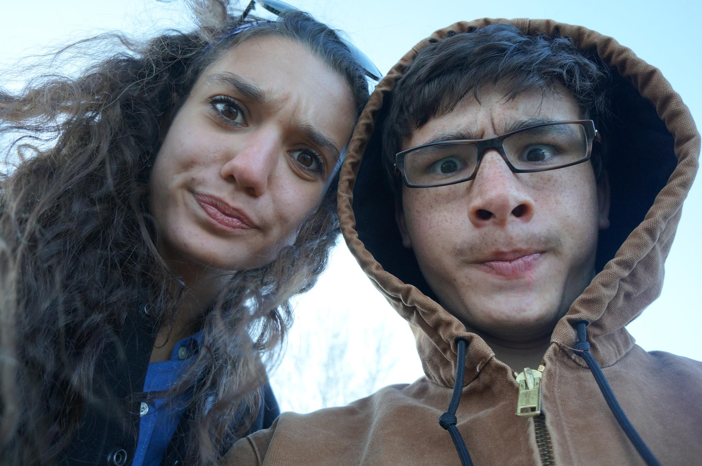
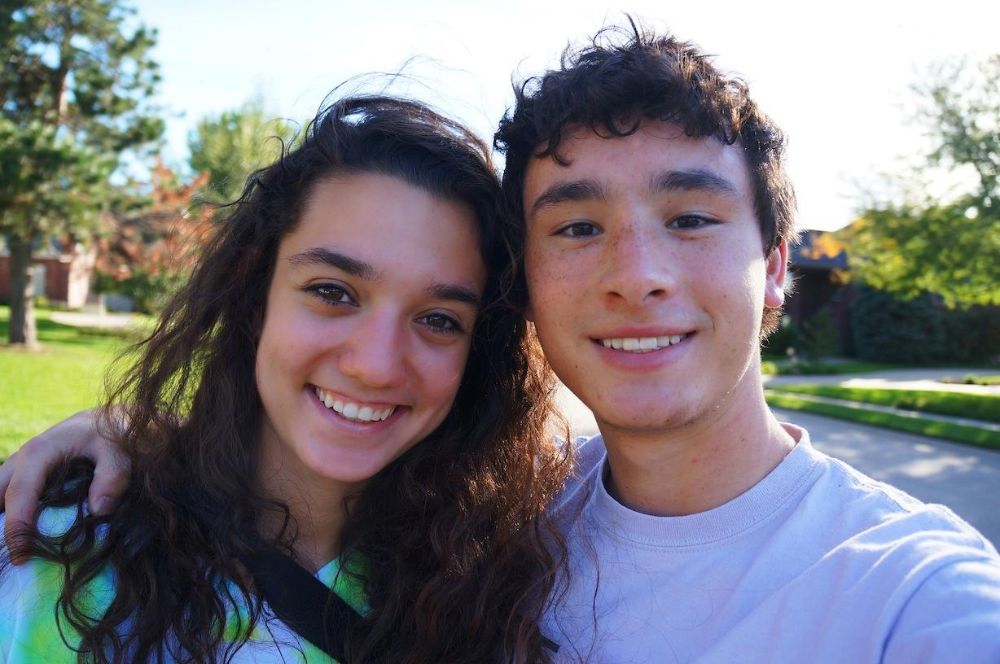
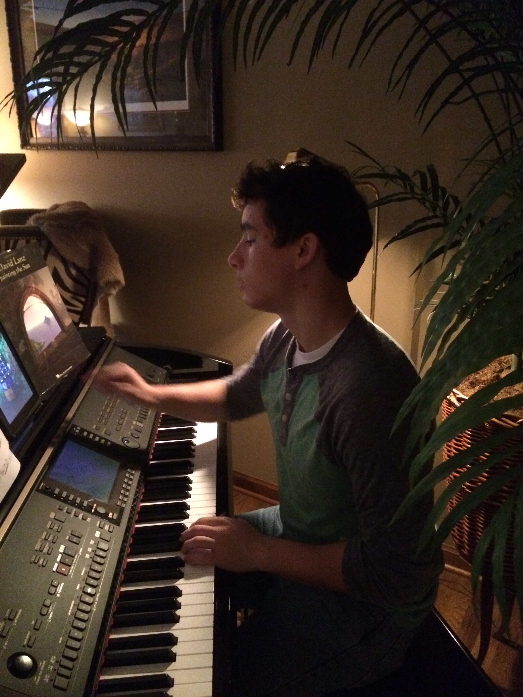
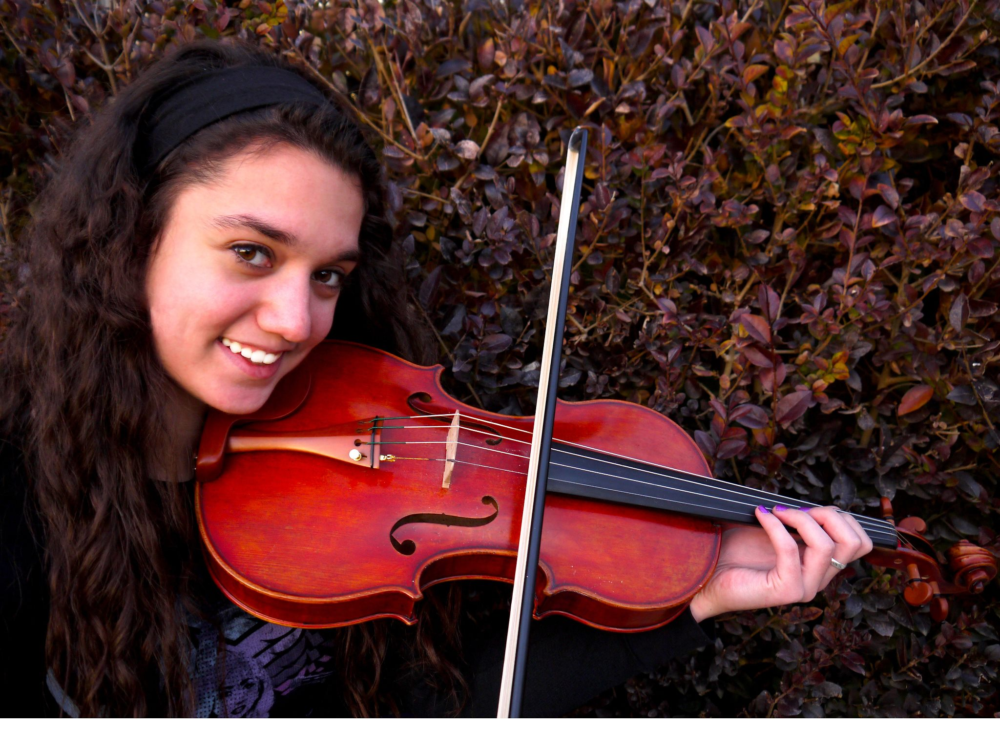
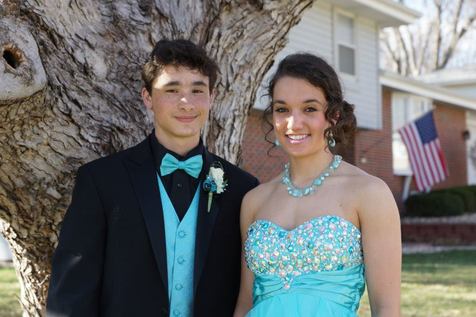
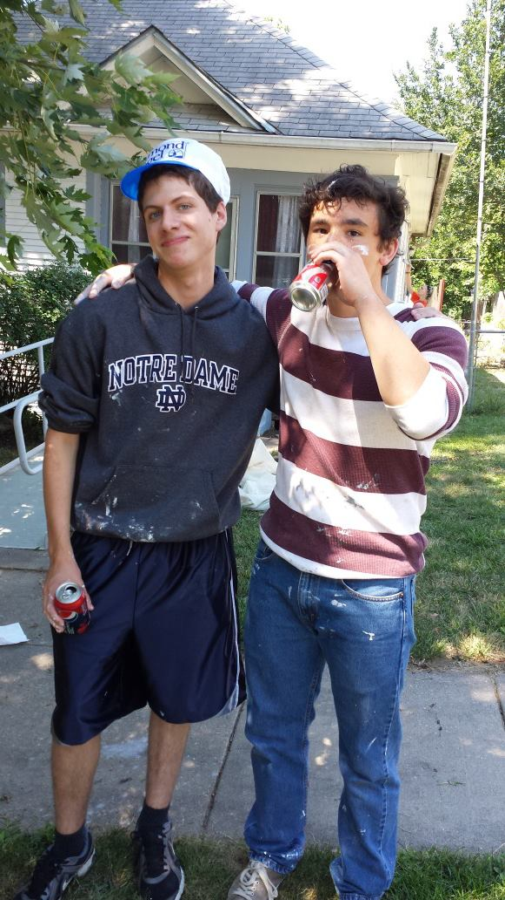
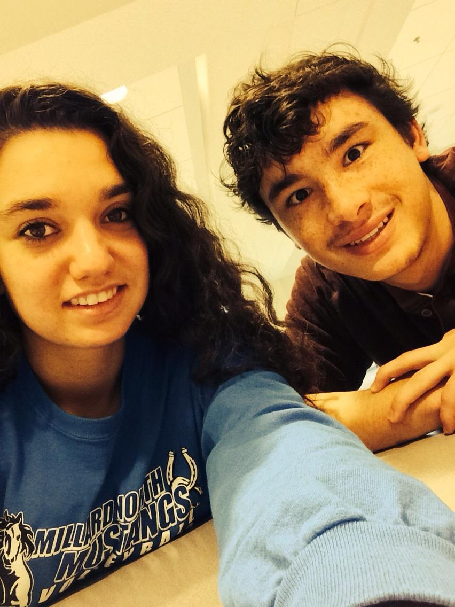
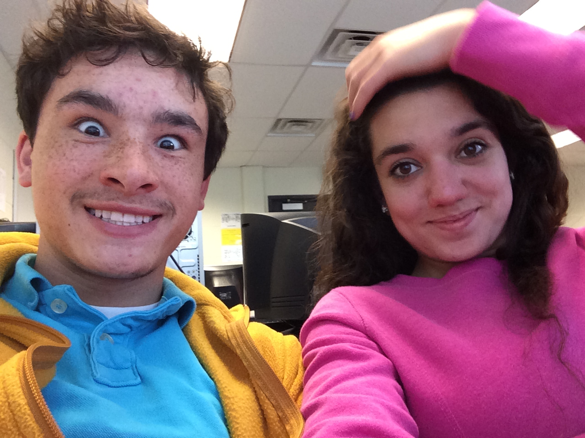
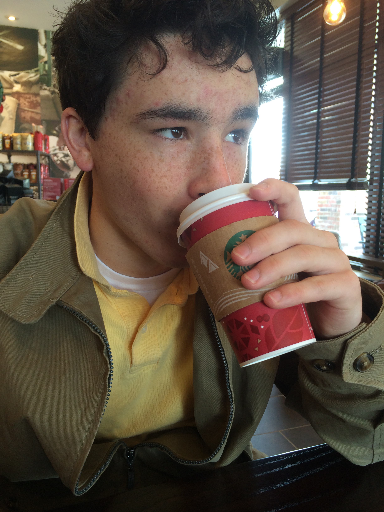

So we began going to Village Inn. You continued to take and edit photos. We need to get back into that groove.
Going on Walks


We went on walks often. Whether we were walking Otto, or just needed some quiet and calming air, we would stroll or wander around the path in your neighborhood. It never mattered what the temperature was outside. Sometimes you had hidden candies in your Carhart jacket, some of which we shared under the stair at MNHS. Let's keep walking and keep making these special memories.
Playing the Piano

First of all, I can't imagine how many times you have rearranged that living room. The piano always seems to be in a different place. However, that doesn't change the way you play. You have always been impressive, from Elton John, to George Winston, to Five for Fighting - all of which we have played/sang together. You know you like my signing ;). I hope you keep up this passion. I truly enjoy it. I just wish I could play as well as you do.
Photoshoot

Junior Prom

I remember how much I really wanted you to ask me to prom. Finally, one day while I was still asleep, you showed up at my door. You had a Starbucks cup in hand and had written "Prom?" all over it with sharpies you had just purchased from Bakers. When you came to pick me up, it was in that nice red bug your mom owned with the top donw. It was a beautiful night for prom. I had tons of fun being able to see you on the dance floor. I know we had tons of fun at after-prom as well, watching the mind-reader and hypnotist. Thank you for taking me!
Brush Up Nebraska

We were both apart of National Honor Society. This meant one day we had to go paint houses and clean them up. It was actually a lot of fun - glad you took some photos!
Senior Year

This picture marks the first day of senior year - where we actually had many classes together. They are listed below.
Calculus Class
We sat right in front of Mr. Higgins. I truly enjoyed having that class with you. Once again, we got to study really hard for the quizzes and tests. Don't forget about the AP test either. We ended up with exact matching grades, too! haha
Creative Writing Class

Mrs. Betzold was our wonderful teacher for this class, sometimes pointing out our relationship. Remember that play we wrote? I don't remember what it was about. I remember you wrote a story where there was a plane crash and the female died. Mrs. Betzold was concerned for me haha. We also had to do those presentations in front of the class. It was a new experience to have a class like that with you.
Starbucks had to have a Drive-Thru

After awhile, our well-visited Starbucks moved to a new location. They added a drive-thru.... which made us notice a difference in service. I think we still enjoyed going, but I know I still miss the tiny Starbucks next to Jimmy Johns.